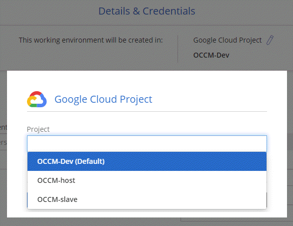

ドキュメントの変更をリクエスト
ドキュメントの変更をリクエスト GitHub で編集
GitHub で編集 寄稿者向けガイド
寄稿者向けガイドCloud Manager 3.7 の新機能
通常、 Cloud Manager では毎月新しいリリースが導入され、新機能、拡張機能、およびバグ修正が提供されます。

|
以前のリリースをお探しですか？"3.6 の新機能" "3.5 の新機能" "3.4 の新機能" |
Cloud Manager 3.7.5 の更新（ 2019 年 12 月 16 日）
この更新プログラムには、次の拡張機能が含まれてい
Cloud Volumes ONTAP 9.7
Cloud Volumes ONTAP 9.7 が、 AWS 、 Azure 、 Google Cloud Platform で利用できるようになりました。
Cloud Volumes ONTAP 向けクラウドコンプライアンス
Cloud Compliance は、 AWS と Azure での Cloud Volumes ONTAP 向けのデータプライバシーとコンプライアンスのサービスです。人工知能（ AI ）ベースのテクノロジを使用したクラウドコンプライアンスは、データコンテキストを把握し、 Cloud Volumes ONTAP システム全体で機密データを特定するのに役立ちます。
Cloud Compliance は現在、限定リリースとして提供されています。
Cloud Manager 3.7.5 （ 2019 年 12 月 3 日）
Cloud Manager 3.7.5 では、次の機能が強化されています。
GCP の Cloud Volumes ONTAP では高速の書き込み速度です
Google Cloud Platform の新規および既存の Cloud Volumes ONTAP システムで高速書き込みを有効にできるようになりました。ワークロードに高速な書き込みパフォーマンスが必要な場合は、高速の書き込み速度を使用することを推奨します。
オンプレミスの ONTAP クラスタを Kubernetes の永続的ストレージとして使用
Cloud Manager では、オンプレミスの ONTAP クラスタをコンテナ用の永続的ストレージとして使用できるようになりました。Cloud Volumes ONTAP と同様に、 Cloud Manager は NetApp Trident の導入を自動化し、は ONTAP を Kubernetes クラスタに接続します。
Kubernetes クラスタを Cloud Manager に追加したら、作業環境のページから Kubernetes クラスタをオンプレミスの ONTAP クラスタに接続できます。

Kubernetes 向けの最新の Trident バージョン
作業環境を Kubernetes クラスタに接続すると、 Cloud Manager によって Trident の最新バージョン（バージョン 19.07.1 ）がインストールされるようになりました。
Azure 汎用 v2 ストレージアカウントをサポート
Azure に新しい Cloud Volumes ONTAP システムを導入すると、 Cloud Manager が診断やデータ階層化用に作成するストレージアカウントが汎用 v2 のストレージアカウントになります。
API を使用して Azure ストレージアカウント名にプレフィックスが追加されます
Cloud Manager で Cloud Volumes ONTAP 用に作成する Azure ストレージアカウントの名前にプレフィックスを追加できるようになりました。Azure に新しい Cloud Volumes ONTAP システムを導入する場合は、 storageAccountPrefix パラメータを使用してください。
Cloud Manager 3.7.4 （ 2019 年 10 月 6 日）
Cloud Manager 3.7.4 では、次の機能が強化されています。
Azure NetApp Files のサポート
Azure NetApp Files の NFS ボリュームを Cloud Manager から直接表示および作成できるようになりました。この機能強化は、クラウドストレージを単一のインターフェイスから管理できるようにすることを目的としています。
この機能を使用するには、最新ので示されている新しい権限が必要です "Azure 向け Cloud Manager ポリシー"。
"Microsoft.NetApp/netAppAccounts/read",
"Microsoft.NetApp/netAppAccounts/capacityPools/read",
"Microsoft.NetApp/netAppAccounts/capacityPools/volumes/write",
"Microsoft.NetApp/netAppAccounts/capacityPools/volumes/read",
"Microsoft.NetApp/netAppAccounts/capacityPools/volumes/delete"Cloud Volumes ONTAP for GCP の機能強化
Cloud Manager 3.7.4 では、 Cloud Volumes ONTAP for Google Cloud Platform の次の機能が拡張されました。
- GCP Marketplace での従量課金制サブスクリプション
-
Google Cloud Platform Marketplace で Cloud Volumes ONTAP に登録すれば、 Cloud Volumes ONTAP の料金を支払うことができます。
- 共有 VPC
-
Cloud Manager と Cloud Volumes ONTAP が Google Cloud Platform の共有 VPC でサポートされるようになりました。
共有 VPC を使用すると、複数のプロジェクトの仮想ネットワークを設定し、一元管理できます。共有 VPC ネットワークを host project でセットアップし、サービス project_ に Cloud Manager と Cloud Volumes ONTAP の仮想マシンインスタンスを導入できます。 "Google Cloud のドキュメント：「 Shared VPC Overview"。
- 複数の Google Cloud プロジェクト
-
Cloud Volumes ONTAP を Cloud Manager と同じプロジェクトに含める必要はなくなりました。Cloud Manager サービスアカウントとロールを追加のプロジェクトに追加し、 Cloud Volumes ONTAP を導入するプロジェクトから選択できます。

Cloud Manager サービスアカウントの設定の詳細については、 "このページの手順 4b を参照してください"。
- Cloud Manager API を使用する場合、お客様が管理する暗号化キー
-
Google Cloud Storage では常にデータが暗号化されてからディスクに書き込まれますが、 Cloud Manager API を使用して、 _cuser-managed 暗号化キー _ を使用する新しい Cloud Volumes ONTAP システムを作成できます。これらは、 Cloud Key Management Service を使用して GCP で生成および管理するキーです。
を参照してください "API 開発者ガイド" "GcpEncryption" パラメータの使用方法の詳細については、を参照してください。
この機能を使用するには、最新ので示されている新しい権限が必要です "GCP 向け Cloud Manager ポリシー"：
- cloudkms.cryptoKeyVersions.useToEncrypt - cloudkms.cryptoKeys.get - cloudkms.cryptoKeys.list - cloudkms.keyRings.list
S3 へのバックアップの機能拡張
これで、既存ボリュームのバックアップを削除できるようになります。以前は、削除できたのは削除されたボリュームのバックアップだけでした。
AWS のブートディスクとルートディスクの暗号化
AWS Key Management Service （ KMS ；キー管理サービス）を使用したデータ暗号化を有効にすると、 Cloud Volumes ONTAP のブートディスクとルートディスクも暗号化されるようになりました。これには、 HA ペアのメディエーターインスタンスのブートディスクが含まれます。ディスクは、作業環境の作成時に選択した CMK を使用して暗号化されます。

|
ブートディスクとルートディスクは、これらのクラウドプロバイダではデフォルトで暗号化が有効になるため、 Azure と Google Cloud Platform では常に暗号化されます。 |
AWS バーレーンリージョンがサポートされます
Cloud Manager と Cloud Volumes ONTAP は、 AWS Middle East （バーレーン）リージョンでサポートされるようになりました。
Azure UAE 北部をサポート
Cloud Manager と Cloud Volumes ONTAP は、 Azure UAE 北部でサポートされるようになりました。
Cloud Manager 3.7.3 の更新（ 2019 年 9 月 15 日）
Cloud Manager で、 Cloud Volumes ONTAP から Amazon S3 にデータをバックアップできるようになりました。
S3 へのバックアップ
S3 へのバックアップは、クラウドデータを完全に管理して保護するバックアップとリストアの機能を提供する、 Cloud Volumes ONTAP 向けのアドオンサービスです。バックアップは、ほぼ長期のリカバリやクローニングに使用されるボリュームの Snapshot コピーとは無関係に S3 オブジェクトストレージに格納されます。
この機能を使用するには、を更新する必要があります "Cloud Manager ポリシー"。現在、次の VPC エンドポイント権限が必要です。
"ec2:DescribeVpcEndpoints",
"ec2:CreateVpcEndpoint",
"ec2:ModifyVpcEndpoint",
"ec2:DeleteVpcEndpoints"Cloud Manager 3.7.3 （ 2019 年 9 月 11 日）
Cloud Manager 3.7.3 では、次の機能が強化されています。
Cloud Volumes Service for AWS の検出および管理
Cloud Manager ので Cloud Volume を検出できるようになりました "Cloud Volumes Service for AWS" サブスクリプション。検出後、 Cloud Volume は Cloud Manager から直接追加できます。この機能拡張により、単一のコンソールからネットアップのクラウドストレージを管理できます。
AWS Marketplace での新しいサブスクリプションが必要です
"AWS Marketplace で新しいサブスクリプションが提供されています"。Cloud Volumes ONTAP 9.6 PAYGO を導入するには、この 1 回限りのサブスクリプションが必要です（ 30 日間の無償トライアルシステムを除く）。サブスクリプションでは、 Cloud Volumes ONTAP PAYGO および BYOL のアドオン機能も提供できます。作成した Cloud Volumes ONTAP PAYGO システムごと、および有効にしたアドオン機能ごとに、このサブスクリプションから料金が請求されます。
バージョン 9.6 以降では、この新しいサブスクリプション方式で、 Cloud Volumes ONTAP PAYGO の既存の 2 つの AWS Marketplace サブスクリプションが置き換えられました。からのサブスクリプションが必要です "Cloud Volumes ONTAP BYOL を導入する際の既存の AWS Marketplace のページ"。
AWS GovCloud （米国東部）のサポート
Cloud Manager と Cloud Volumes ONTAP が AWS GovCloud （ US-East ）リージョンでサポートされるようになりました。
GCP で Cloud Volumes ONTAP が一般提供されています （ 2019 年 9 月 3 日）
Cloud Volumes ONTAP は、お客様が独自のライセンスを使用（ BYOL ）したときに、一般的に Google Cloud Platform （ GCP ）で利用できるようになりました。従量課金制のプロモーションもご利用いただけます。このキャンペーンでは、無制限のシステム数のライセンスが無料で提供されており、 2019 年 9 月末に有効期限が切れます。
Cloud Manager 3.7.2 （ 2019 年 8 月 5 日）
FlexCache ライセンス
Cloud Manager で、すべての新しい Cloud Volumes ONTAP システム用の FlexCache ライセンスが生成されるようになりました。ライセンスの使用量は 500GB に制限されています。
ライセンスを生成するには、 Cloud Manager から https://ipa-signer.cloudmanager.netapp.com にアクセスする必要があります。この URL にファイアウォールからアクセスできることを確認してください。
iSCSI 用の Kubernetes ストレージクラス
Cloud Volumes ONTAP を Kubernetes クラスタに接続すると、 Cloud Manager は、 iSCSI 永続ボリュームで使用できる Kubernetes ストレージクラスを 2 つ追加で作成するようになりました。
-
* NetApp-file-san* ： iSCSI パーシステントボリュームをシングルノードの Cloud Volumes ONTAP システムにバインドする場合
-
* NetApp-file-redundant-san * ： iSCSI 永続的ボリュームを Cloud Volumes ONTAP HA ペアにバインドする場合
inode の管理
Cloud Manager でボリュームの inode の使用量が監視されるようになりました。inode の 85% を使用すると、 Cloud Manager はボリュームのサイズを増やして、使用可能な inode の数を増やします。ボリュームに含めることができるファイル数は、ボリューム内の inode の数によって決まります。
|
|
Cloud Manager は、容量管理モードが自動（デフォルト設定）に設定されている場合にのみ inode 使用量を監視します。 |
AWS での香港リージョンのサポート
Cloud Manager と Cloud Volumes ONTAP が AWS のアジア太平洋（香港）リージョンでサポートされるようになりました。
Azure のオーストラリア中部リージョンのサポート
Cloud Manager と Cloud Volumes ONTAP が次の Azure リージョンでサポートされるようになりました。
-
オーストラリア中部
-
オーストラリアセントラル 2.
バックアップとリストアに関する最新情報（ 2019 年 7 月 15 日）
3.7.1 リリース以降、 Cloud Manager では、バックアップのダウンロードとリストアに使用する Cloud Manager の設定はサポートされなくなりました。 "Cloud Manager をリストアするには、次の手順を実行する必要があります"。
Cloud Manager 3.7.1 （ 2019 年 7 月 1 日）
-
このリリースには主にバグ修正が含まれています。
-
拡張機能が 1 つ含まれています。 Cloud Manager は、ネットアップサポートに登録されている各 Cloud Volumes ONTAP システム（新規および既存の両方のシステム）に NetApp Volume Encryption （ NVE ）ライセンスをインストールするようになりました。
-
"NetApp Volume Encryption のセットアップ"
Cloud Manager は、中国地域のシステムに NVE ライセンスをインストールしません。
Cloud Manager 3.7 の更新（ 2019 年 6 月 16 日）
Cloud Volumes ONTAP 9.6 は、 AWS 、 Azure 、 Google Cloud Platform でプライベートプレビューとして利用できるようになりました。プライベートプレビューに参加するには、 ng-Cloud-Volume-ONTAP-preview@netapp.com にリクエストを送信します。
Cloud Manager 3.7 （ 2019 年 6 月 5 日）
今後の Cloud Volumes ONTAP 9.6 リリースでサポートされる予定です
Cloud Manager 3.7 では、次回の Cloud Volumes ONTAP 9.6 リリースがサポートされます。9.6 リリースには、 Cloud Volumes ONTAP のプライベートプレビューが Google Cloud Platform に含まれています。9.6 が利用可能になったらリリースノートを更新します。
NetApp Cloud Central アカウント
クラウドリソースの管理方法が強化されました。各 Cloud Manager システムには、 _NetApp Cloud Central アカウント _ が関連付けられます。このアカウントはマルチテナンシーに対応しており、将来的には他のネットアップクラウドデータサービスにも対応する予定です。
Cloud Manager では、 Cloud Central アカウントは、 Cloud Volumes ONTAP を導入する Cloud Manager システムおよび _ ワークスペース _ のコンテナです。
|
|
Cloud Central アカウントサービスに接続するためには、 Cloud Manager から https://cloudmanager.cloud.netapp.com_ にアクセスする必要があります。ファイアウォールでこの URL を開いて、 Cloud Manager がサービスに接続できることを確認します。 |
システムと Cloud Central アカウントの統合
クラウドマネージャ 3.7 にアップグレードした後、クラウドセントラルアカウントと統合するために、特定のクラウドマネージャシステムを選択する予定です。アカウントを作成し、各ユーザに新しいロールを割り当ててワークスペースを作成し、既存の作業環境をワークスペースに配置します。Cloud Volumes ONTAP システムが停止することはありません。
Cloud Backup Service を使用したバックアップとリストア
NetApp Cloud Backup Service for Cloud Volumes ONTAP は、クラウドデータの保護と長期保管のためのフルマネージドのバックアップ / リストア機能を提供します。Cloud Backup Service と Cloud Volumes ONTAP for AWS を統合できます。サービスによって作成されたバックアップは、 AWS S3 オブジェクトストレージに格納されます。
バックアップエージェントをインストールして設定し、バックアップとリストアの処理を開始します。サポートが必要な場合は、 Cloud Manager のチャットアイコンを使用してお問い合わせください。
|
|
この手動プロセスはサポートされなくなりました。S3 へのバックアップ機能は、 3.7.3 リリースで Cloud Manager に統合されました。 |